How do our emotional connections with places become part of our identity?
Method
19 interviews
Output
Six needs and a framework
Tools
Miro · Figma · Ai
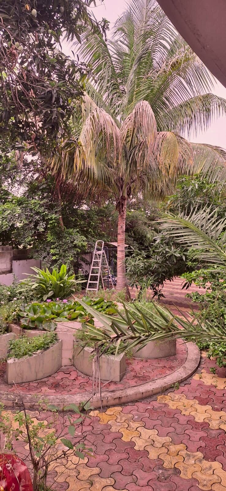
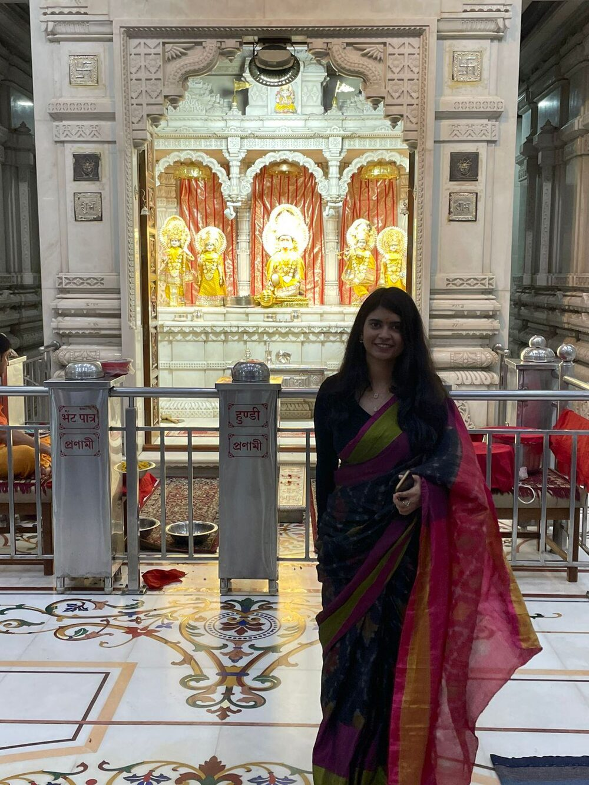
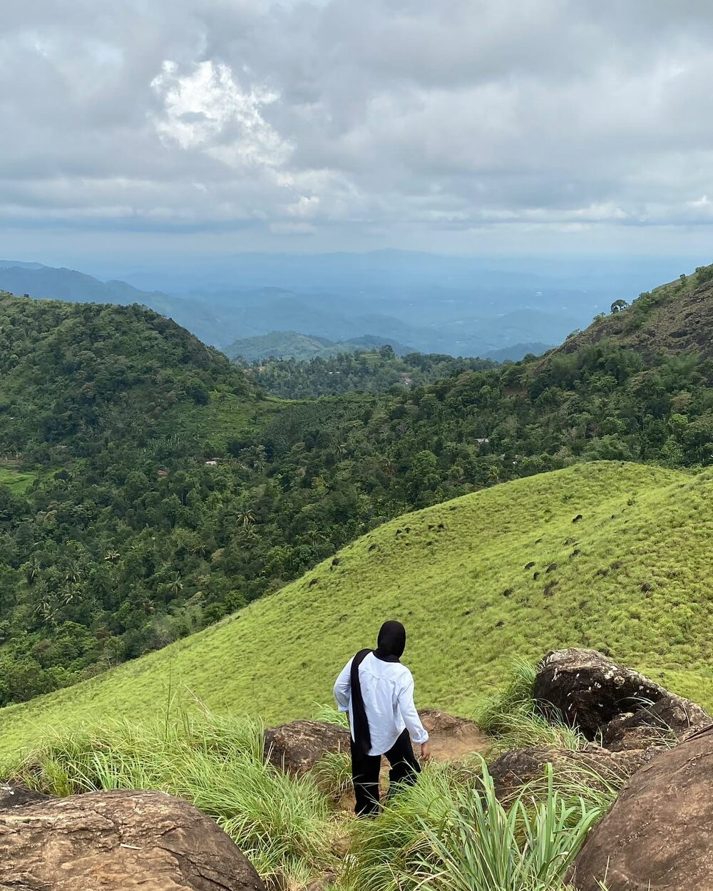
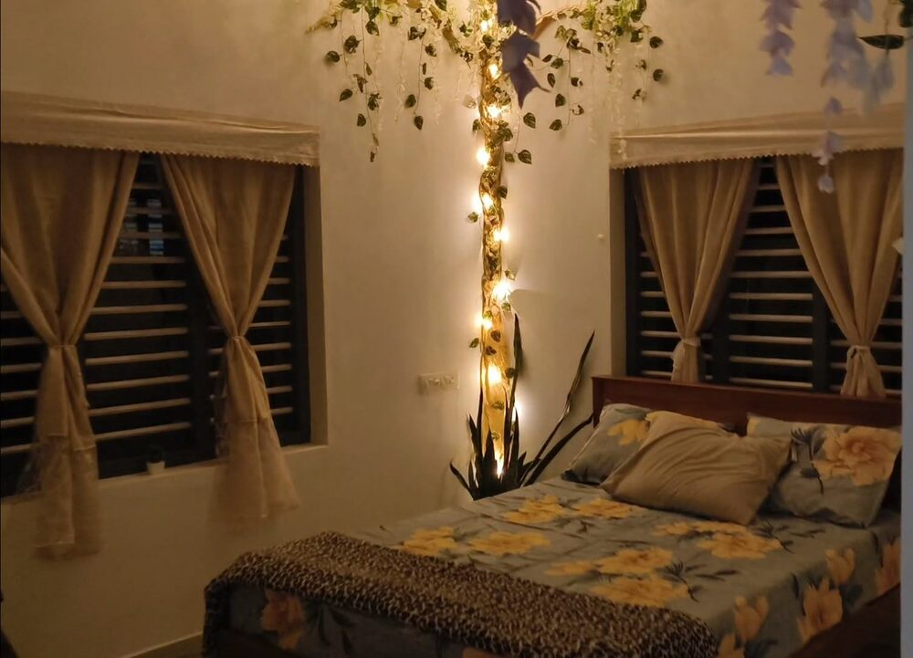
01
Research series
A place becomes meaningful through the memories, emotions, relationships, and experiences we attach to it. Across the responses, homes, rooms, terraces, nature, schools, and childhood spaces became places of safety, freedom, connection, creativity, and self-expression. Over time, these experiences transform ordinary spaces into emotional landscapes: places that reflect who we are and become part of how we understand and express our identity.
I collected responses from 19 people about the places where they feel most like themselves.
Six needs the places gave them
SSSafe space
ESEscape
SESelf-expression
MEMemory
COConnection
EREmotional regulation
02
19 people, one question
01 — VARADA
Design entrepreneur · Maharashtra
“It feels safe. Life becomes slow and peaceful when I'm home.”
We have pets here, parents, good food, a garden, no noise — and most importantly, life slows down. There's no one particular memory to justify it. But it feels peaceful now, because I never really got to be at home — studies, then work — so now it feels like something to go back to.
Their place: Home
FamilyPetsSlownessSafety
02 — EKTA
Gurugram
“My happy place will always be home.”
It's the people around me, the warmth, the familiar little chaos — and my six dogs. They're more than pets; they're my family and my best friends. They don't judge, they don't expect me to be anything, and they love me exactly as I am. Home, my people, and my dogs give me a space where I feel safe, loved, and completely myself.
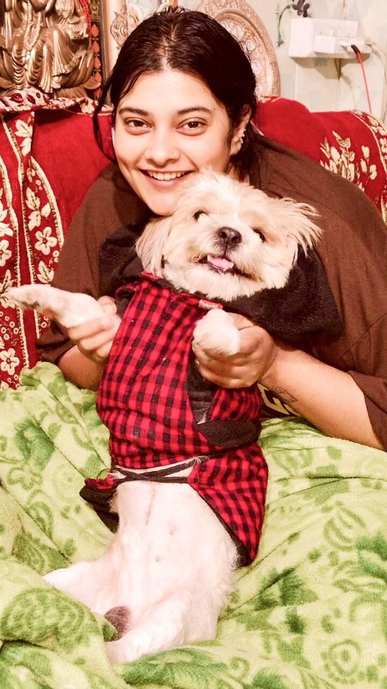
Their place: Home
DogsChosen familyFreedomUnconditional love
03 — SUPRIYA
Engineer · Gujarat
“I feel peaceful from inside wherever I'm going, on a trip.”
I don't have one particular place. I feel peaceful from inside when I'm going anywhere on a trip — mostly mountains or beaches. I like mountains more.
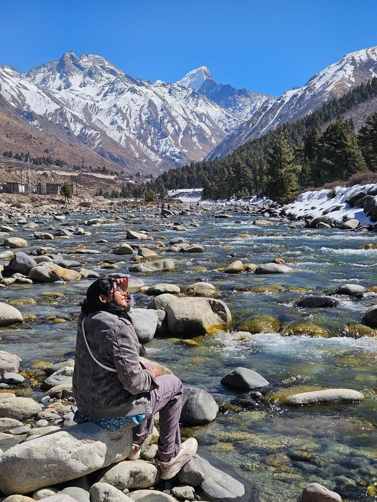
Their place: In motion
TravelMountainsMovement
04 — TARASHISH
Assistant professor · Delhi
“I step away from the situation for a while.”
When I'm feeling down, confused, or stuck between two decisions, I tend to take a break from everything. I have a couple of places I like to go to when I need some space. Instead of constantly negotiating with myself about which decision is right, I step away from the situation for a while. Going back to these places helps me clear my mind and gives me some time to think.
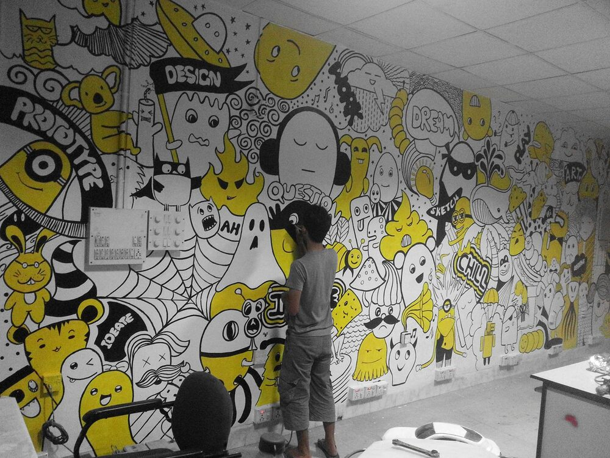
Their place: A place to step away
SpaceClear mindTime to thinkDecisions
05 — ABHISHEK TIWARI
Assistant Professor · Kerala
“A small piece of land where all my cousins would gather.”
The place I want to go back to holds my childhood memories — a small piece of land where all the cousins would gather, grow trees, and spend time in nature. It was long vacations filled with masti and really good times with my cousins.
“I feel someone is there to look after me. I get clarity every time I go.”
The temple gives me a space free from judgment, where my mind calms, stress fades, and I find clarity. Through rituals, music, movement, and mantras, I feel connected to something beyond myself while still bringing my own individuality. Each temple may look different, but the feeling of love, peace, and connection remains the same.
Their place: Nature, in her own world
NatureSolitudeFavourite moments
07 — HARSHIT
Working Professional · Ghaziabad
“I talk to nature whenever I feel dizzy from everything else.”
He likes to surround himself with nature — it makes him feel relaxed and calm, away from the chaos, and lets him feel like himself. Whenever things start to feel overwhelming, he talks to nature. If he could, he'd just live surrounded by it.
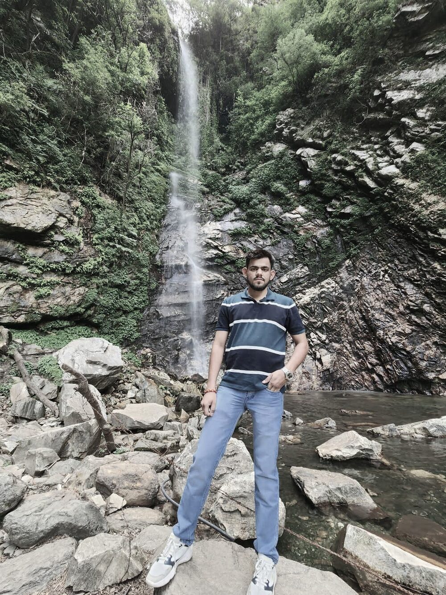
Their place: Surrounded by nature
NatureCalmEscape from chaosBeing himself
08 — PRIYANSHI
Experience Designer · Gurugram
“All my memories are tied to my school.”
My place is my school, Saint Joseph's, where I studied from grade 1 to grade 5. All my memories are tied to it — the activities I used to do there, like dancing, singing, and sports, which I loved. Everyone was together, and it felt like a shared world.
My go-to place is a meditation center here in Bangalore. That's a place where we connect with ourself — we're able to connect with God. We practice meditation, we feel peaceful, we feel like ourself.
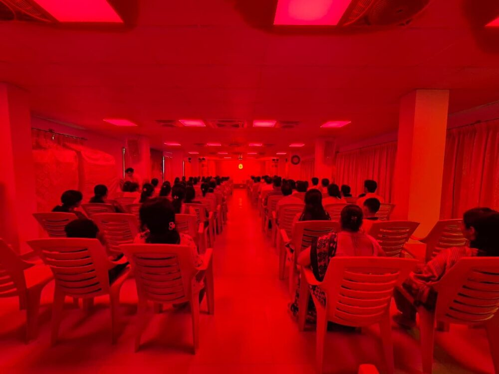
Their place: A meditation center
MeditationPeaceConnectionStillness
10 — PRIYANKA KUMARI
Student · Bengaluru
“I like to disappear into nature for a while.”
I don't really have a particular go-to place, but whenever I feel confused, sad, or overwhelmed, I usually go to my hostel terrace and spend some time by myself. I like to disappear into nature for a while, feel the fresh air, and enjoy the quiet — it gives me space to clear my mind, feel my emotions, and simply be with myself.
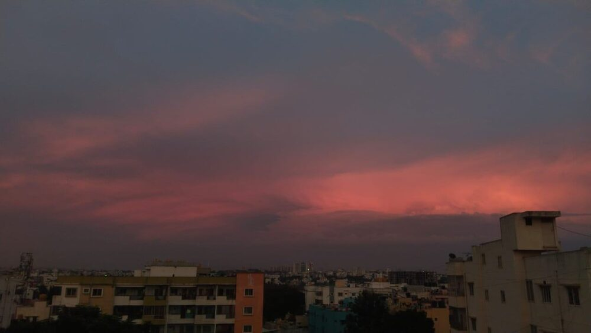
Their place: Hostel terrace
SolitudeNatureEmotional reset
11 — SAANVI
Design Student · Jaipur
“I've spent the bad and the good phases of my life here.”
The terrace of her home has been her place since childhood — the only place where she's spent both the bad and the good phases of her life. She still goes there today: sitting, standing, watching the neighbours, and spending time with the dogs — whether she's happy, or just doing okay.
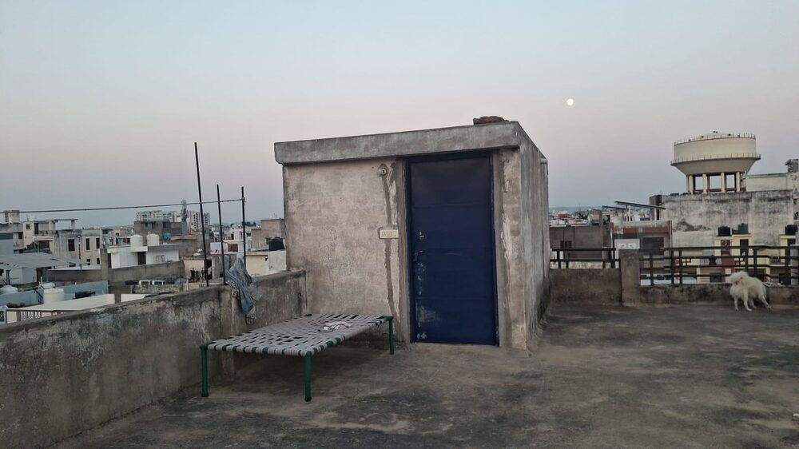
Their place: The terrace at home
ChildhoodRoutineDogsConstancy
12 — SPREHA BAJPAI
Student · Kanpur
“It feels safe. Life becomes slow and peaceful when I'm home.”
We have pets here, parents, good food, a garden, no noise — and most importantly, life slows down. There's no one particular memory to justify it. But it feels peaceful now, because I never really got to be at home — studies, then work — so now it feels like something to go back to.
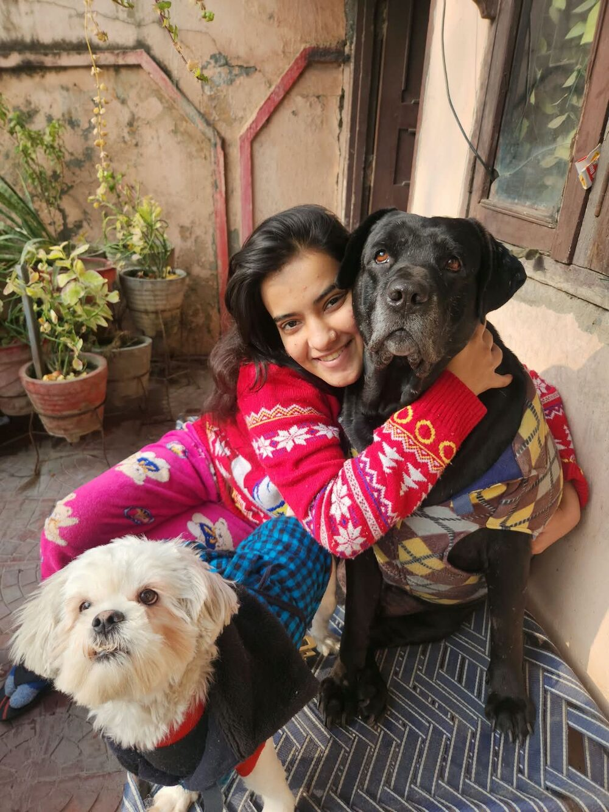
Their place: Home
FamilyPetsSlownessSafety
13 — SUDHEENDRA DAS
Assistant professor · Kerala
“I used to go with my friend. She's not with me now, but I still like to go.”
He likes to go to church because of the memories attached to it — it's peaceful. He used to go there with a friend; she isn't with him anymore, but he still likes to go.
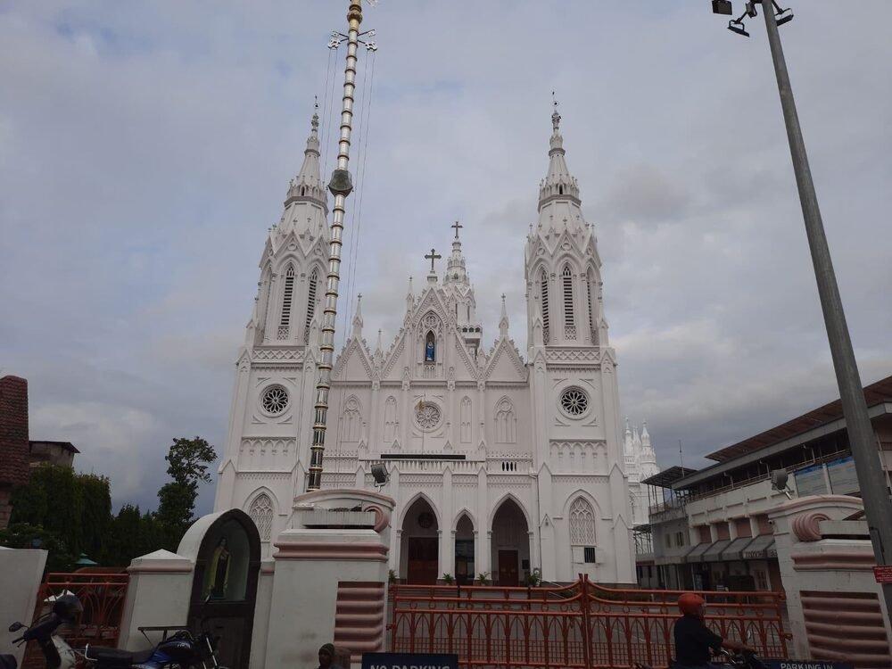
Their place: Church
MemoryPeaceFriendshipContinuity
14 — SHERIN
Design Student · Kerala
“It relaxes my mind and gives me positive energy.”
I like travelling to the mountains because it relaxes my mind and gives me positive energy. The peaceful environment, fresh air, beautiful views, and quiet surroundings make me feel calm and happy. It helps me forget my stress and gives me a fresh feeling.
Their place: The mountains
MountainsFresh airQuietStress relief
15 — RIFA HASSAN
Design Student · Kerala
“The space feels like a reflection of who I am.”
My room is the place where I feel most like myself because almost everything in it reflects my personality. I have a cozy sitting space, a workspace for designing, and a projector that lets me create different environments depending on my mood. I also made a tree-like decoration inspired by wisteria, with lights around it. Most of the things in my room are handmade by me, so the space feels like a reflection of who I am.
Their place: Own room
HandmadeCreative spaceComfortSelf-expression
16 — GOWTHAMI
Design Student · Kerala
“His presence is always around us, even now.”
My favourite place is always my home — because of my family: my mother, my younger brother, and my father. It's been three years since my father passed away, but we still miss him a lot. Our home holds so many memories of him, and whenever I'm there, I feel connected to him, like he's still with us.
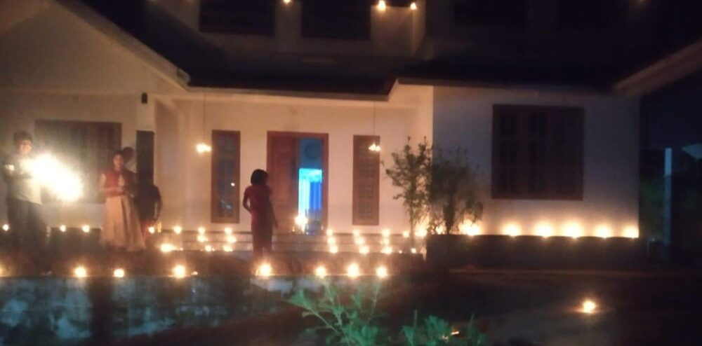
Their place: Home, with her family
FamilyMemoryFatherConnection
17 — DEVIKA
Design Student · Kerala
“I enjoy doing different things on my own.”
My favourite place is somewhere surrounded by trees and nature. I love being there alone, listening to music and enjoying the peaceful surroundings. I also like talking to strangers, doing something creative, and observing new things around me. I enjoy doing different things on my own, without needing anyone's help.
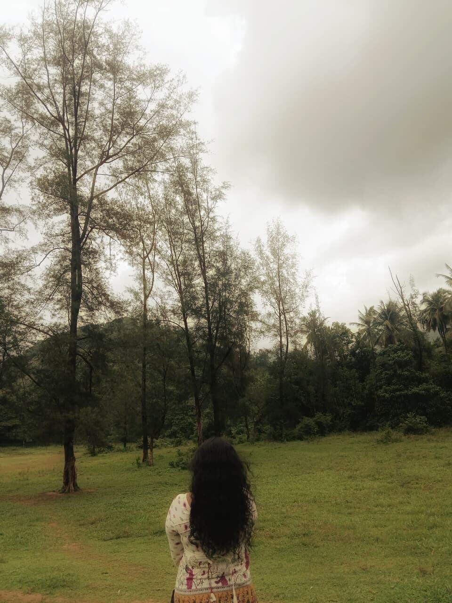
Their place: Nature, alone
NatureSolitudeMusicIndependence
18 — KEERTHANA
Design Student · Kerala
“I can relax and forget about outside distractions.”
I feel most comfortable being myself at home. It gives me a peaceful and safe feeling — I can relax, forget about outside distractions, and spend time in my own way. That's why I feel I can truly be myself when I'm at home.
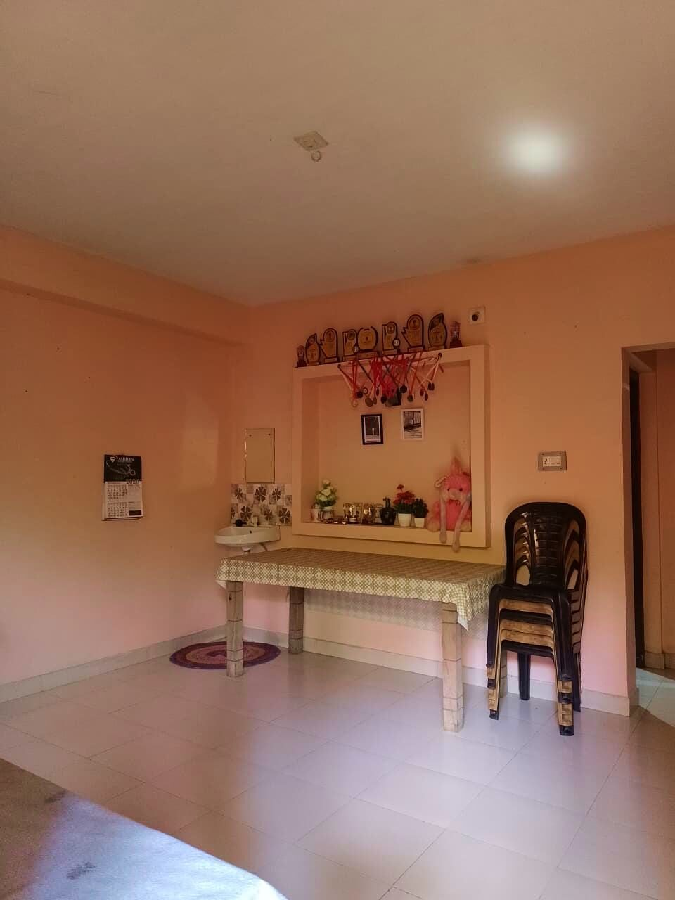
Their place: Home
PeaceSafetyRelaxation
19 — AKARSH GUPTA
Software Engineer · Mexico
“Home is where I can truly be myself.”
Home is where I can truly be myself. In other places, I sometimes feel like I have to act or adjust according to the situation.
Each person is linked to the needs their place gave them. Click to enlarge.
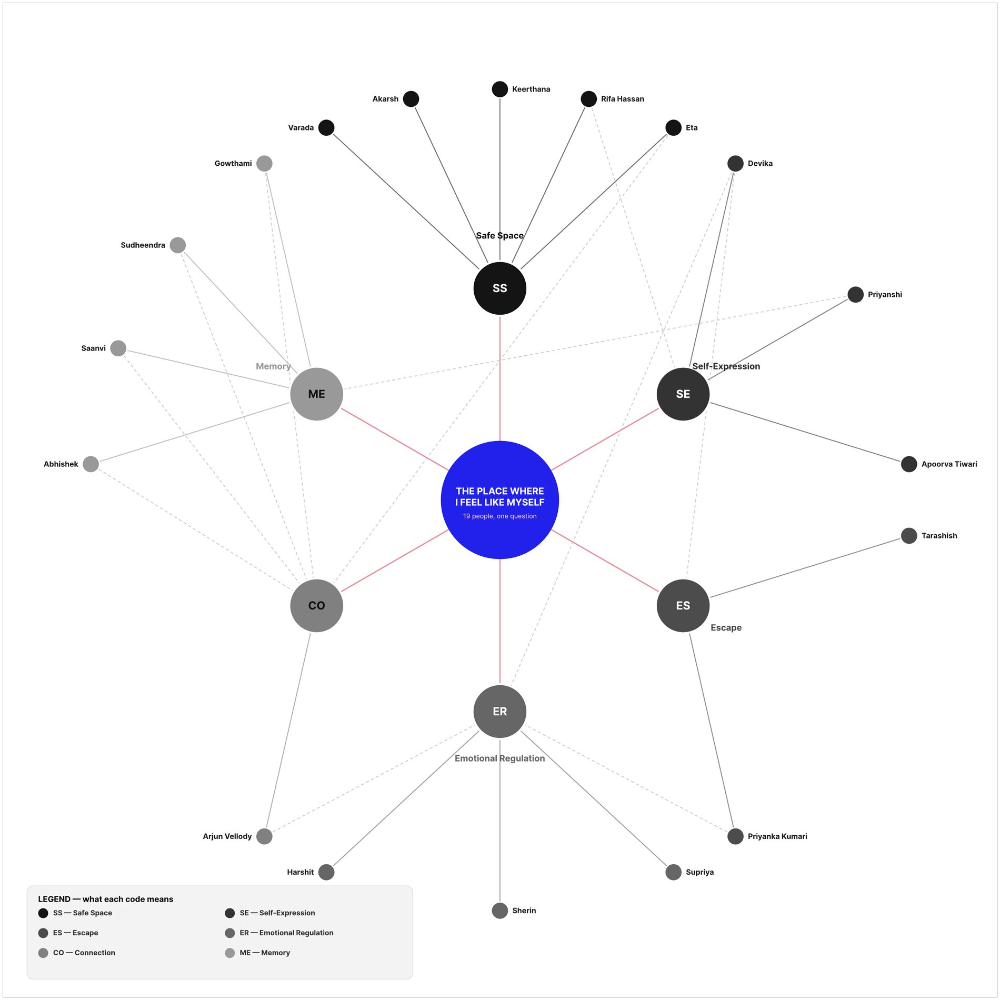
Network of 19 people and six needs: SS safe space, SE self-expression, ES escape, ER emotional regulation, CO connection, ME memory.
04
From place to identity
The framework that came out of the interviews: a place and a person shape an experience, experience builds memory, memory carries emotion, and emotion drives behaviour, which leads to identity.
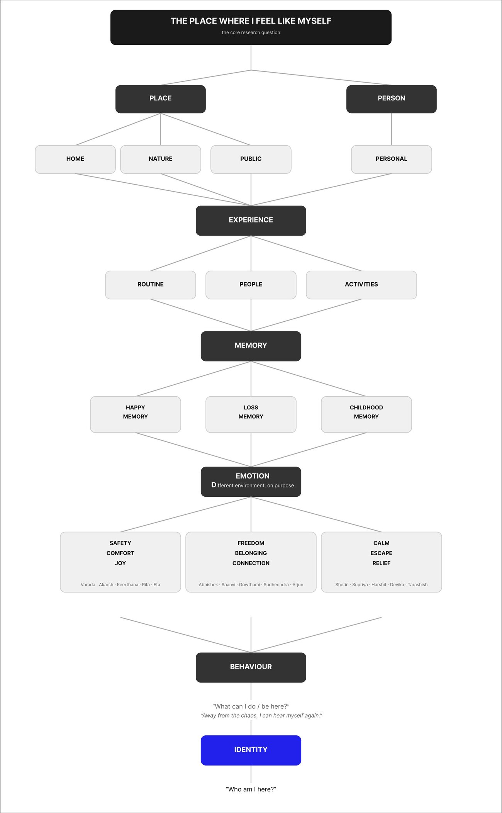
Place and person, experience, memory, emotion, behaviour, identity. “Who am I here?”